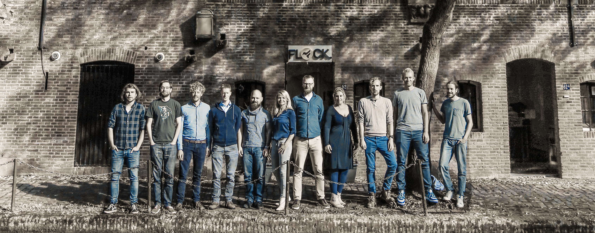

DE WERELD SAMEN INSPIREREN
Over ons
Wij zijn een community van software engineers
Flock. is een community waar software engineers vol passie samenwerken. We delen kennis, inspireren elkaar en maken samen mooie software.
Het allerbelangrijkste bij Flock. is dat jij kan doen wat je leuk vindt.
Ons verhaal
Google assistent
Wij hebben de Google Assistent met bol.com verbonden en daar een blog over geschreven om mede software engineers te inspireren. Met deze assistent kunnen we technologie gebruiken op een natuurlijke manier, door er mee te praten. Bol.com stimuleert partijen om hun platform te gebruiken door API’s open te stellen.
We hebben de Catalog API van bol.com en DialogFlow van Google gebruikt om zogenoemde ‘Intents’ te maken die door Natural Language Processing (NLP) geïnterpreteerd kunnen worden en zo naar producten te zoeken. Door de combinatie van DialogFlow en NLP bleek dat een platte structuur en een rijke context de beste manier was om gesprekken te modelleren. Het toevoegen van een Natural Language Interface aan een API creëert interessante nieuwe scenario’s voor de interactie met machines door mensen. Doorgaans geeft een API een uitgebreide output die door de gebruiker wordt gefilterd. Wanneer je met spraak communiceert met een API moet de reactie duidelijk en precies zijn. Data kwaliteit is belangrijk, maar precisie heeft prioriteit voor een goede ervaring met natuurlijke talen.

Doe mee
Iedere twee weken op een dag samenwerken met de community van software engineers.
De volgende Flock. community borrel is op 6 februari.
Flock organiseert samen met haar partners ING, bol.com en Schiphol meetups.